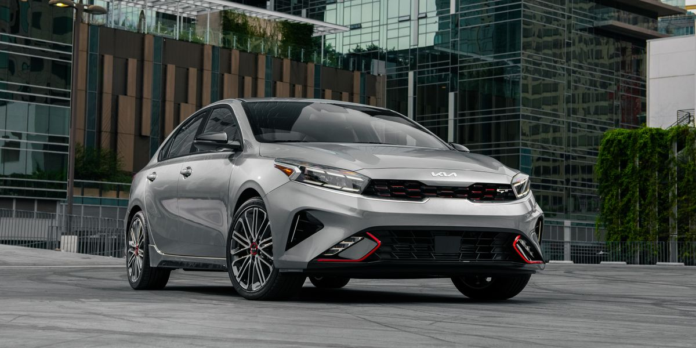

1. Toyota Corolla: Conocido por su fiabilidad, bajo costo de mantenimiento y eficiencia de combustible, el Toyota Corolla suele ser una opción popular en la categoría de coches compactos.

2. Honda Civic: Otro competidor fuerte en el segmento de coches compactos, el Honda Civic destaca por su conducción ágil, calidad de construcción y tecnología avanzada.
3. Hyundai Elantra: Hyundai ha ganado reputación por ofrecer coches con una excelente relación calidad/precio, y el Elantra no es una excepción. Ofrece una buena cantidad de características y comodidades a un precio competitivo.

4. Mazda Mazda3: Reconocido por su estilo elegante, interior de alta calidad y experiencia de conducción deportiva, el Mazda3 ofrece una combinación atractiva de rendimiento y valor.
5. Kia Forte: Similar al Hyundai Elantra en muchos aspectos, el Kia Forte ofrece un interior bien equipado, una buena economía de combustible y una garantía generosa, lo que lo convierte en una opción sólida en su segmento.
